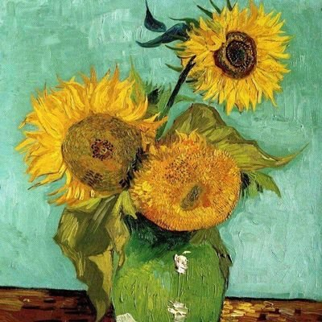

nønpolar
@nonpolar10
@wngzchn11 许多年前自杀意愿高涨的时候曾有那种浪漫幻想——参与某种基地考察，然后某一天，一个风雪暴烈的日子中，穿戴整齐后独自出走，走到冰山与冷水的交界，望着鲸鱼从水中跃出又落下。
就这么坐着，望着暗白色的冷阳，然后身躯慢慢僵硬。
但现在不想死了，和人说话总是更有意思一些hhh

梨渦原點
@wngzchn11
@nonpolar10 假使你在南极写调查报告.docx时还想喝一杯热茶